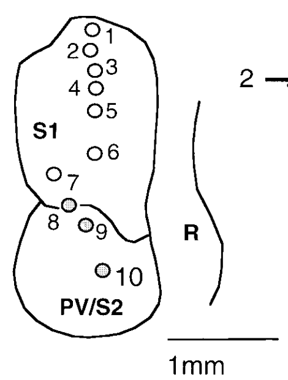
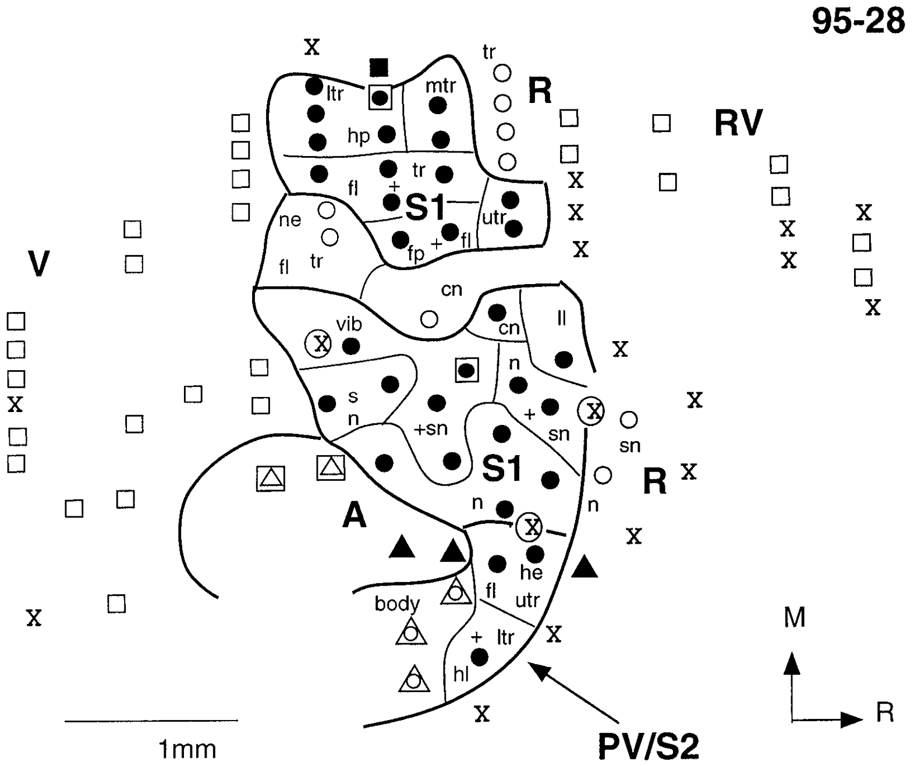
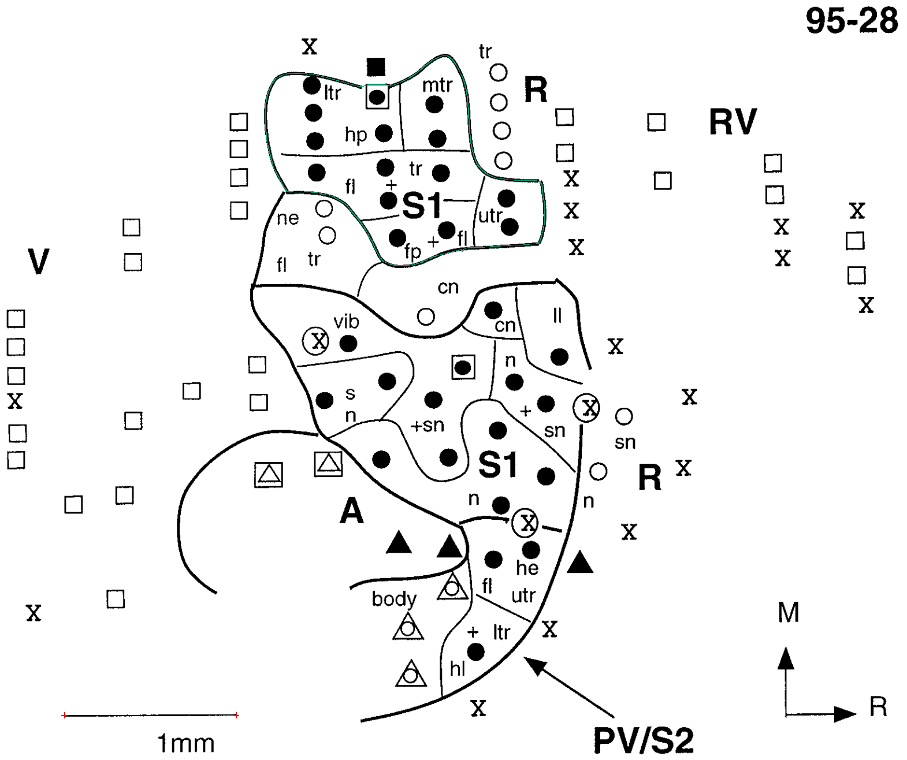
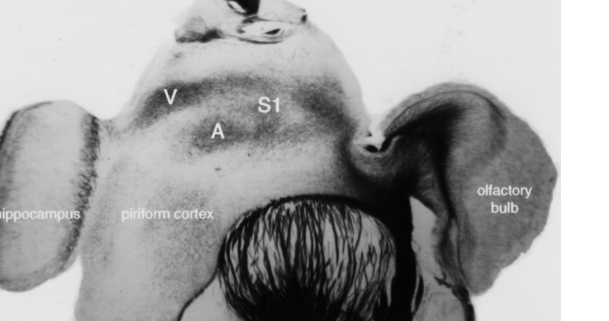
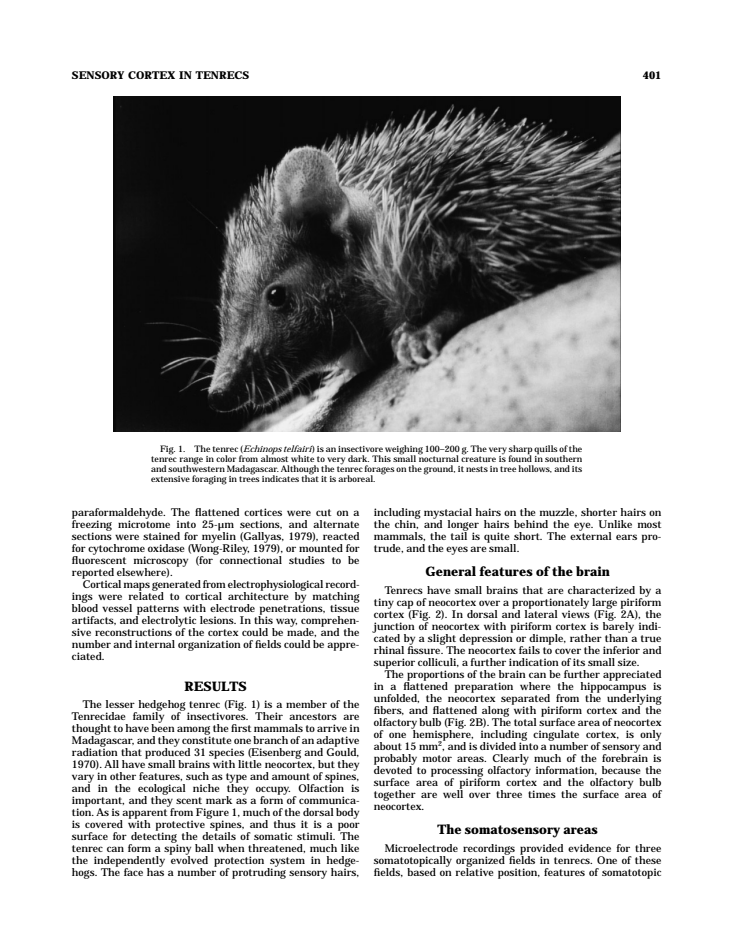
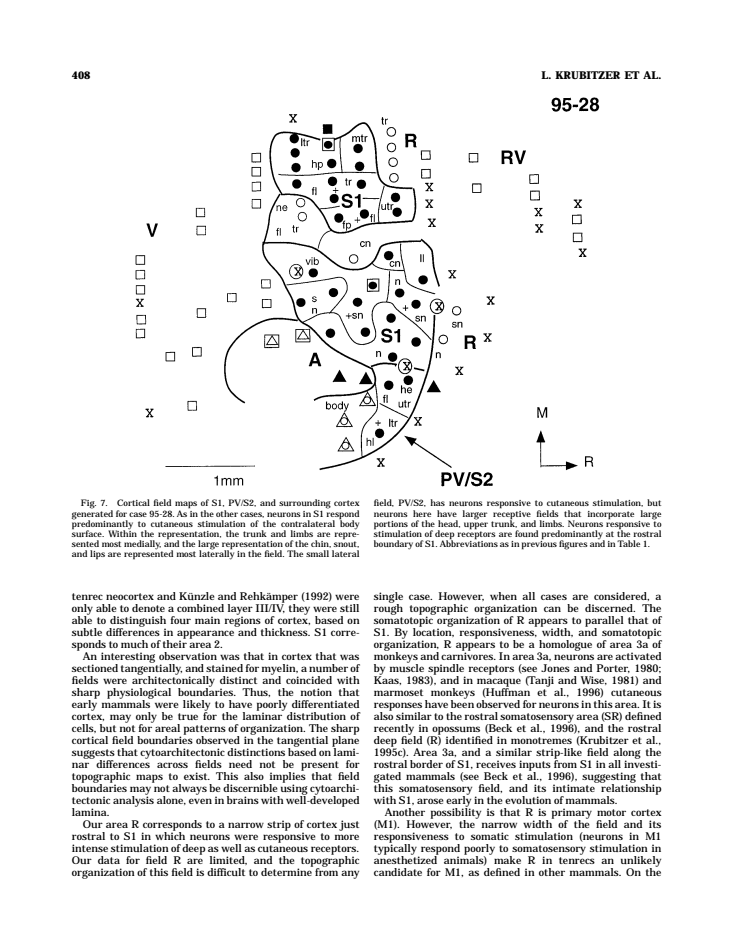
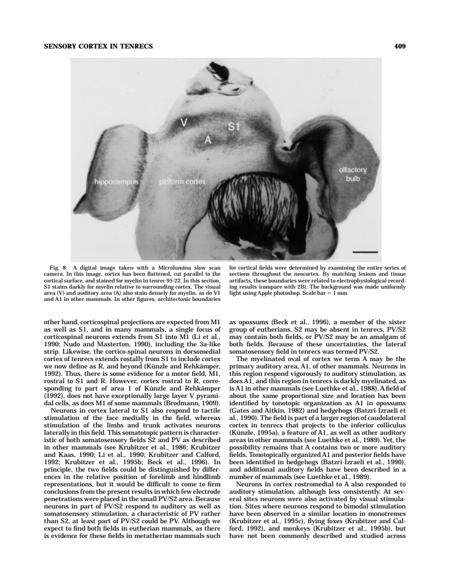
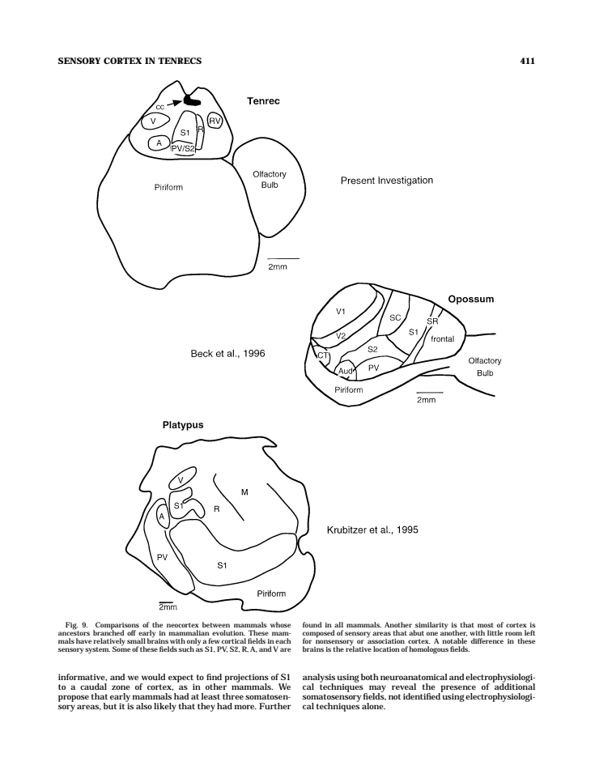

Latest full-dataset recheck: all cases together, source toggles and current inventory
Flatmap tracing reviewFlatmap tracing review
Source image, saved anatomical outlines and scale endpoints. Unfinished fields are NA.
fig02B — 95-22
Dense tracing on 4 pixels/PDF point source rendering. Anatomical interpretation provisional; hide overlay in the precision review to inspect the printed stroke.
ImageJ ROIs · Calibrated TIFF
| Field | mm² | % neocortex | Status |
|---|
| V | 1.557 | NA | provisional; anatomical review required |
| R | 0.963 | NA | provisional; anatomical review required |
| A | 1.193 | NA | provisional; anatomical review required |
| RV | 0.910 | NA | provisional; anatomical review required |
| S1 | 2.387 | NA | provisional; anatomical review required |
| PV/S2 | 1.385 | NA | provisional; anatomical review required |
fig03 — 95-22
Dense tracing on 4 pixels/PDF point source rendering. Anatomical interpretation provisional; hide overlay in the precision review to inspect the printed stroke.
ImageJ ROIs · Calibrated TIFF
| Field | mm² | % neocortex | Status |
|---|
| S1 | 2.038 | NA | provisional; anatomical review required |
| V | 1.754 | NA | provisional; anatomical review required |
| PV/S2 | NA | NA | not_measurable |
| R | NA | NA | not_measurable |
| RV | NA | NA | not_measurable |
| A | NA | NA | not_measurable |
fig04 — 95-22
Dense tracing on 4 pixels/PDF point source rendering. Anatomical interpretation provisional; hide overlay in the precision review to inspect the printed stroke.


ImageJ ROIs · Calibrated TIFF
| Field | mm² | % neocortex | Status |
|---|
| S1 | 1.975 | NA | provisional; anatomical review required |
| PV/S2 | 1.232 | NA | provisional; anatomical review required |
| R | NA | NA | not_measurable |
fig05 — 95-29
Dense tracing on 4 pixels/PDF point source rendering. Anatomical interpretation provisional; hide overlay in the precision review to inspect the printed stroke.
ImageJ ROIs · Calibrated TIFF
| Field | mm² | % neocortex | Status |
|---|
| V | 1.559 | NA | provisional; anatomical review required |
| A | 1.194 | NA | provisional; anatomical review required |
| S1 | NA | NA | not_measurable |
| PV/S2 | NA | NA | not_measurable |
| R | NA | NA | not_measurable |
| RV | NA | NA | not_measurable |
fig06 — 95-29
Dense tracing on 4 pixels/PDF point source rendering. Anatomical interpretation provisional; hide overlay in the precision review to inspect the printed stroke.
ImageJ ROIs · Calibrated TIFF
| Field | mm² | % neocortex | Status |
|---|
| S1 | 2.958 | NA | provisional; anatomical review required |
| PV/S2 | 1.423 | NA | provisional; anatomical review required |
| R | NA | NA | not_measurable |
fig07 — 95-28
Dense tracing on 4 pixels/PDF point source rendering. Anatomical interpretation provisional; hide overlay in the precision review to inspect the printed stroke.


ImageJ ROIs · Calibrated TIFF
| Field | mm² | % neocortex | Status |
|---|
| S1 medial mapped portion | 1.209 | NA | provisional; anatomical review required |
| S1 | NA | NA | not_measurable |
| PV/S2 | NA | NA | not_measurable |
| R | NA | NA | not_measurable |
| RV | NA | NA | not_measurable |
| V | NA | NA | not_measurable |
| A | NA | NA | not_measurable |
fig08 — 95-22
Dense tracing on 4 pixels/PDF point source rendering. Anatomical interpretation provisional; hide overlay in the precision review to inspect the printed stroke.


Calibrated TIFF
| Field | mm² | % neocortex | Status |
|---|
| S1 | NA | NA | not_measurable |
| A | NA | NA | not_measurable |
| V | NA | NA | not_measurable |
| R | NA | NA | not_measurable |
| RV | NA | NA | not_measurable |
| PV/S2 | NA | NA | not_measurable |
All-figure source assessment
Krubitzer_etal_1997: 9 numbered figures assessed; 15 field/fragment measurements. Saved observations, where present, are provisional. No certified complete-neocortex denominator is available.
Figure inventory · Methods and limits · Measurements · Complete-field absolute-area summary
Figure 1 all — assessed_excluded
Animal photograph. No cortical field map.
PDF page3; review preview only.

Figure 2 A — digitized_provisional
Dorsal/lateral cortex projections. Full-dataset recheck 2026-10-16: 1 field/component observations across 1 saved view(s). Each perimeter reviewed separately; repeated views and illustrative summaries are retained without adding independent animals. Source-limited totals remain explicit NA. Map IDs: fig07.
Main maps: fig07
PDF page10; review preview only.

Figure 8 section — assessed_not_measurable
Myelin-stained section. Diffuse stain alone does not delimit complete fields; paper methods require multiple sections.
Main maps: fig03
PDF page11; review preview only.

Figure 9 all — assessed_excluded
Comparative summary. Tenrec drawing repeats Figure 2B; other species adapted from other publications. No added independent cases.
Main maps: fig02B
PDF page13; review preview only.

Enlarged source-toggle precision review